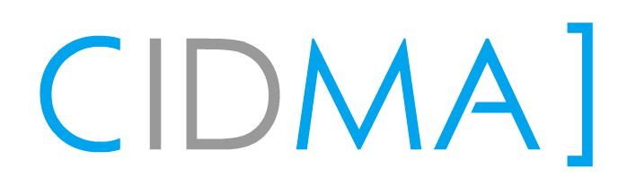
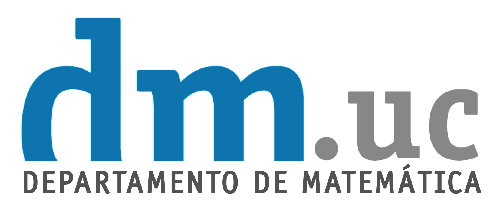
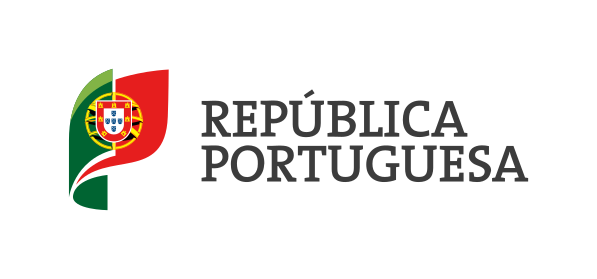

CMUC
Centre for Mathematics
of the University of Coimbra
This conference is supported in part by the Centre for Mathematics of the University of Coimbra (CMUC) under the Portuguese Foundation for Science and Technology (FCT), Grants UID/00324/2025 and UID/PRR/00324/2025.

CIDMA
Center for Research and Development in Mathematics and Applications
University of Aveiro
This conference is supported in part by CIDMA under the Portuguese Foundation for Science and Technology (FCT), Grants UID/04106/2025.

